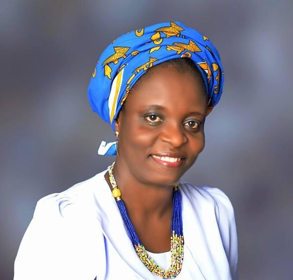

Complications occurring after unsafe abortion contribute to maternal mortality and morbidity in developing countries and are recognized by the international community as an important public health problem (Bertrand and Escudero, 2002). Each year, throughout the world, approximately 210 million women become pregnant and over 135 million of them deliver live born infants. The remaining 75 million pregnancies end in stillbirths, spontaneous or induced abortions (WHO, 2008). An estimated 21.6 million unsafe abortions took place worldwide in 2008, almost all in developing countries (ibid). The United Nations has identified the unacceptably high maternal mortality ratio as a major challenge of the new millennium. Unsafe abortions account for approximately 11% of all maternal deaths in Nigeria and similar figures abound in other sub-Saharan African countries with restrictive abortion laws. Globally, an estimated 40-50 Million abortions occur annually and nearly half of these are unsafe.
In Nigeria, of the yearly 6.8 Million pregnancies, 16% end in spontaneous miscarriage and 11% as induced abortion. Where effective contraceptive methods are available and widely used the total abortion rate declines sharply. In Nigeria the contraceptive prevalence is 15% and this contributes significantly to the high prevalence of abortion and its complications. Access to safe abortion can be restricted by the law, and this may make women turn to illegal or often unsafe abortion, or make them hesitant to seek care when urgently needed because of complications of an unsafe abortion (Singh and al; 2009). Many of these abortions end in serious complications and even death; globally, an estimated 47,000 women die every year as a result of unsafe abortions, while many more experience severe health consequences.
The vast majority of these deaths occur in Sub-Saharan African countries (WHO; 2008) where the legislation on abortion is inherited from colonial powers and is still severely restrictive. Currently, about 90% of women of childbearing age in Africa live in contexts with restrictive abortion laws. The bulk of women requiring abortion in these contexts resort to unsafe methods and procedures resulting in fatalities, severe disabilities or complications that which require treatment, hospital stays, intensive care, and attendance by highly skilled, yet scarce, health providers. As a result, unsafe-abortion-related mortality and morbidities persist. Although provision of safe and legal abortion is proscribed in many African countries, there are established national policies on the provision of appropriate care for women presenting with complications associated with poorly performed abortions.
There is therefore an important need for research that offers better understanding of the availability, provision, accessibility, and utilization of services for the management of post-abortion complications. Using comparative multi-country lenses, APHRC propose a study to examine the quality of post-abortion care in Burkina Faso, Nigeria and Kenya. The three countries offer both similar and dissimilar contexts for investigating the quality of post abortion care (PAC). In all three countries, abortion is legally restricted, permitted only to save the life of a woman and/or preserve the physical health of a pregnant woman and in cases of rape, fetal abnormality and incest in Burkina Faso. These countries are also signatories to the Post-abortion care (PAC) programme that was introduced in public health systems around the world since the 1994 International Conference on Population and Development (ICPD) to meet the need of abortion complications and at the same time be cost effective. ICPD Programme of Action confers the rights of women to quality services in the management of abortion complications, complemented with contraception counseling and provision.
Ebonyi State University, Abakaliki and APHRC, Kenya are partnering to carry out the study on Quality of Post-Abortion Care in Nigeria and funded by Williams and Flora Hewett Foundation.
Nkechi Bridget Emma-Echiegu - Ph.D. (Medical Social Work) is a Senior Lecturer in the Department of Psychology and Sociological Studies, Ebonyi State University, Abakaliki. She has more than 23 years work experience. She has worked as a UNDP Field/Monitoring Officer, Social Welfare Officer and Volunteer Social Worker. She has also served as Enumerator WHO-assisted research, Co-coordinator, supervisor, study leader, facilitator, resource person, and consultant on various academic and humanitarian projects for both local and international NGOs including UNDP, WHO, UNICEF, World Bank Family Health International, John Hopkins University/USAID, UNFPA, and CODESRA. She has attended over 22 national and international conferences and workshops and co-authored 4 book chapters and many peer reviewed articles in national and international journals and conference proceedings. Her area of research activities includes Prevention and Protection from Child Abuse and Neglect, Prevention of Maternal Mortality, Adolescent Sexuality, Female Genital Cutting, Gender Mainstreaming, and Community Perception of Health Services. She is skilled in investigating reported cases of child abuse and neglect, counselling of victims, vocational training, micro-credit facilities, income-generating activities, mentorship, adult and mass literacy, teaching and research, report writing, presentation, data management and student supervision. .
We need the following qualified persons in our field team;
Application closes midnight of 10th September, 2018